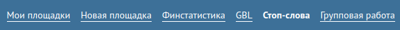

В SAPE можно составлять списки стоп-слов, и применять их для выбранных сайтов.
Чтобы управлять списками стоп-слов, надо выбрать пункт меню Стоп-слова:

В этом интерфейсе можно управлять как списками, так и словами в этих списках. Слова в списках разделяются пробелами, длина слов - минимум 3 символа.
Чтобы списки стоп-слов применялись для фильтрации рекламы на заданном сайте, их нужно привязать к выбранному сайту. Делается это в меню Групповая работа -> вкладка Стоп-слова. Если возле выбранной плоощадки нажать кнопку редактирования, то появится форма, в которой можно галочками отметить, какие списки стоп-слов следует применять для фильтрации рекламы на сайте.